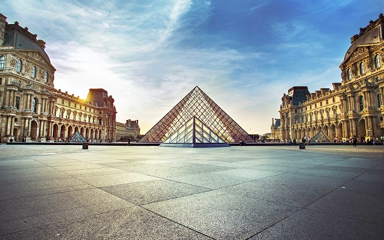
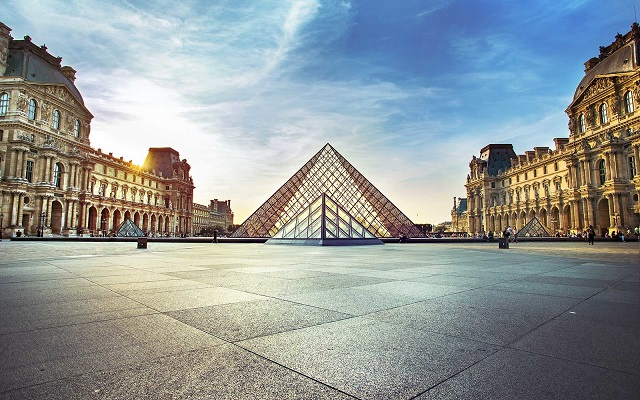
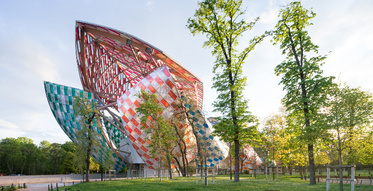
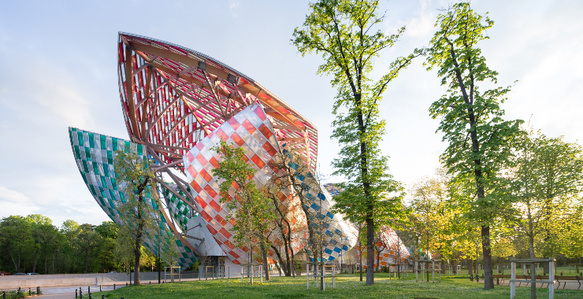
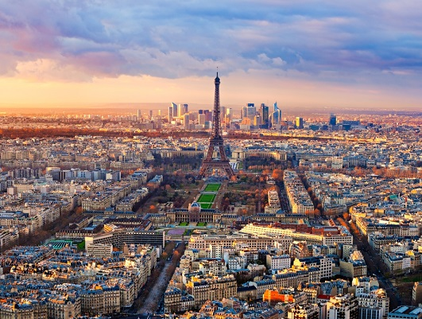
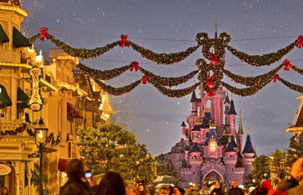
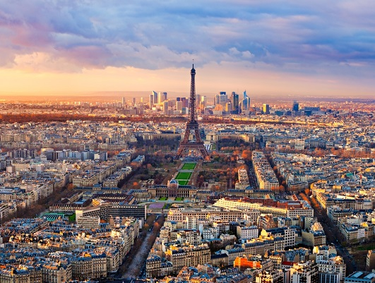
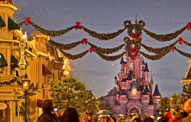

Paris
Welcome to Paris
Paris has a timeless familiarity for first-time and frequent visitors, with instantly recognisable architectural icons, along with exquisite cuisine, chic boutiques and priceless artistic treasures.
The wrought-iron spire of the Eiffel Tower piercing the clouds, the broad Arc de Triomphe guarding Paris’ most glamorous avenue, the Champs-Élysées, the gargoyled Notre Dame cathedral, lamplit bridges spanning the Seine and art nouveau cafes spilling on to wicker-chair-lined terraces are indelibly etched in the minds of anyone who’s visited the city – and the imaginations of anyone who hasn’t (yet). But despite initial appearances, Paris’ cityscape isn’t static: there are some stunning modern and contemporary icons too, from the inside-out, industrial-style Centre Pompidou to the mur végétal (vertical garden) gracing the striking Musée du Quai Branly.
Parisians are synonymous with style, and fashion shopping is the city’s forte. Paris remains at the forefront of international trends, and browsing emerging and established designer boutiques and flagship haute couture houses is a quintessential part of any visit. You’ll also find uberhip concept stores, quirky homeware shops, and resplendent art nouveau department stores, along with a trove of vintage shops and flea markets, atmospheric bookshops (including the dark-green bouquiniste stalls – secondhand bookshop – lining the riverbanks), adorable children’s wear and toy shops, art and antique dealers, venerable shops selling state-of-the-art professional cookware, and, of course, gourmet food and wine shops galore.
With an illustrious artistic pedigree – Renoir, Rodin, Picasso, Monet, Manet, Dalí and Van Gogh are but a few of the masters who lived and worked here over the years – Paris is one of the great art repositories of the world, harbouring treasures from antiquity onward. In addition to big hitters like the incomparable Louvre, the Musée d’Orsay’s exceptional impressionist collection, and the Centre Pompidou’s cache of modern and contemporary art, there are scores of smaller museums housing collections in every imaginable genre, and a diverse range of venues mounting major exhibitions through to off-beat installations.
Paris’ grandeur is inspiring but what I love most about the city is its intimacy. Its quartiers (quarters) are like a patchwork of villages, and while it’s one of the world’s major metropolises – with all of the culture and facilities that go with it – there’s a real sense of community at the local shops, markets and cafes that hasn’t changed since my childhood. Yet because every little ‘village’ has its own evolving character, I’m constantly discovering and rediscovering hidden corners of the city.
Paris’ dining is iconic: France’s reputation for its cuisine (the French word for ‘kitchen’) precedes it, and whether you seek a cosy neighbourhood bistro or a triple-Michelin-starred temple to gastronomy, you'll find every establishment prides itself on exquisite preparation and presentation of quality produce, invariably served with wine. Enticing patisseries, boulangeries (bakeries), fromageries (cheese shops) and crowded, colourful street markets are perfect for packing a picnic to take to the city’s parks and gardens. A host of culinary courses – from home kitchens through to the world’s most prestigious cookery schools – offers instruction for all schedules, abilities and budgets.
Top experiences
-
Eiffel Tower
No one could imagine Paris today without it. But Gustave Eiffel only constructed this elegant, 320m-tall signature spire as a temporary exhibit for the 1889 World's Fair. Luckily, the art-nouveau tower’s popularity assured its survival. Prebook tickets online to avoid long ticket queues. Lifts ascend to the tower’s three floors; change lifts on the 2nd floor for the final ascent to the top. Energetic visitors can climb as far as the 2nd floor via the south pillar’s 704 stairs.
-
Arc de Triomphe
If anything rivals the Eiffel Tower as the symbol of Paris, it’s this magnificent 1836 monument to Napoléon’s victory at Austerlitz (1805), which he commissioned the following year. The intricately sculpted triumphal arch stands sentinel in the centre of the Étoile (‘Star’) roundabout. From the viewing platform on top of the arch (50m up via 284 steps and well worth the climb) you can see the dozen avenues.
-
Cathédrale Notre Dame
Paris' most visited unticketed site, with upwards of 14 million visitors per year, is a masterpiece of French Gothic architecture. The focus of Catholic Paris for seven centuries, its vast interior accommodates 6000 worshippers. Highlights include its three spectacular rose windows, treasury, and bell towers, which can be climbed. From the North Tower, 400-odd steps spiral to the top of the western facade, where you’ll find yourself face-to-face with frightening gargoyles and a spectacular view of Paris.
-
Musée du Louvre
Few art galleries are as prized as the Musée du Louvre, Paris’ pièce de résistance and the world's most visited museum. The palace rambles over four floors, up and down innumerable staircases, and through three wings. Showcasing 35,000 works of art – from Mesopotamian, Egyptian and Greek antiquities to masterpieces by artists such as da Vinci (including his incomparable Mona Lisa), Michelangelo and Rembrandt – it would take nine months to glance at every piece, rendering advance planning essential.
-
Jardin du Luxembourg
This inner-city oasis of formal terraces, chestnut groves and lush lawns has a special place in Parisians' hearts. Napoléon dedicated the 23 gracefully laid-out hectares of the Luxembourg Gardens to the children of Paris, and many residents spent their childhood prodding 1920s wooden sailboats with long sticks on the octagonal Grand Bassin pond, watching puppets perform Punch & Judy–type shows at the Théâtre du Luxembourg, and riding the carrousel (merry-go-round) or ponies.
-
Centre Pompidou
Renowned for its radical architectural statement, the 1977-opened Centre Pompidou brings together galleries and cutting-edge exhibitions, hands-on workshops, dance performances, cinemas and other entertainment venues, with street performers and fanciful fountains outside. The Musée National d’Art Moderne, France’s national collection of art dating from 1905 onward, is the main draw; a fraction of its 100,000-plus pieces – including fauvist, cubist and surrealist works, pop art and contemporary works – is on display. Don't miss the spectacular Parisian panorama from the rooftop.
-
Les Catacombes
Paris’ most macabre sight is its underground tunnels lined with skulls and bones. In 1785 it was decided to rectify the hygiene problems of Paris’ overflowing cemeteries by exhuming the bones and storing them in disused quarry tunnels and the Catacombes were created in 1810.
-
Musée d’Orsay
The home of France’s national collection from the impressionist, postimpressionist and art-nouveau movements spanning from 1848 to 1914 is the glorious former Gare d’Orsay railway station – itself an art-nouveau showpiece – where a roll-call of masters and their world-famous works are on display.
-
Cimetière du Père Lachaise
The world’s most-visited cemetery, Père Lachaise opened in 1804. Its 70,000 ornate and ostentatious tombs of the rich and famous form a verdant, 44-hectare sculpture garden. The most visited are those of 1960s rock star Jim Morrison (division 6) and Oscar Wilde (division 89). Pick up cemetery maps at the conservation office near the main bd de Ménilmontant entrance. Other notables buried here include composer Chopin; playwright Molière; poet Apollinaire; and writers Balzac, Proust, Gertrude Stein and Colette.
-
Panthéon
Overlooking the city from its Left Bank perch, the Panthéon's stately neoclassical dome is an icon of the Parisian skyline. The vast interior is an architectural masterpiece: originally a church and now a mausoleum, it has served since 1791 as the resting place of some of France’s greatest thinkers, including Voltaire, Rousseau, Braille and Hugo. A copy of Foucault's pendulum, first hung from the dome in 1851 to demonstrate the rotation of the earth, takes pride of place.
Discover the beauty of Paris
 

 


 


